![Soil profile picture is given here. Soil is stratified into following horizons. O - Horizon : it consists of fresh or partially decomposed organic matter A - Horizon : It consists of top soil with humus, living creatures and in-organic minerals. B - Horizon: It consists of iron, aluminium and silica rich clay organic compounds. C - Horizons : It consists of parent materials of soil, composed of little amount of organic matters without life forms. P - Horizon : It is a parent bedrock . * Needleleaf Forest, * Temperate Deciduous Forest, * Tropical RainForest, * Broadleaf Evergreen Forest, * Tropical grassland, * Desert, * Desert Scrub, * Chaparral, * Temperate grassland, * Deciduous Forest, * Mixed Forest, * Coniferous Forest, * Tundra, * Ice cap.](images/image376.png)
6.1 Ecology
6.2 Ecological factors
6.3 Ecological adaptations
6.4 Dispersal of seeds and fruits
Ecology is a division of biology which deals with the study of environment in relation to organisms. It can be studied by considering individual organisms, population, community,
biome or biosphere and their environment. While observing our different environments,
one can ask questions like
• Why do plants or animals vary with places?
• What are the causes for variation in biological diversity of different places?
• How soil, climate and other physical features affect the flora and fauna or vice versa?
These questions can be better answered with the study of ecology. Ecology is essentially a practical science involving experiments, continuous observations to predict how organisms react to particular environmental circumstances and understanding the principals involved in ecology.
R. Misra
The term “ecology” (oekologie) is derived from two Greek words – oikos (meaning house or dwelling place and logos meaning study) It was first proposed by Reiter (1868). However, the most widely accepted definition of ecology was given by Ernest Haeckel (1869).
Box item:
Alexander von Humbolt - Father of Ecology
Eugene P. Odum - Father of modern Ecology
R. Misra - Father of Indian Ecology
“The study of living organisms, both plants and animals, in their natural habitats or homes.”- Reiter (1885)
“Ecology is the study of the reciprocal relationship between living organisms and their
environment.” - Earnest Haeckel (1889)
The interaction of organisms with their environment results in the establishment of grouping of organisms which is called ecological hierarchy or ecological levels of organization. The basic unit of ecological hierarchy is an individual organism. The hierarchy of ecological systems is illustrated below:
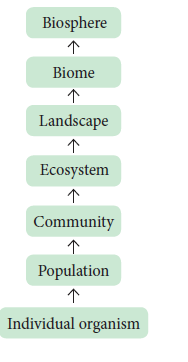
Ecology is mainly divided into two branches; they are autecology and synecology.
1. Autecology is the ecology of an individual species and is also called species ecology.
2. Synecology is the ecology of a population or community with one or more species and also called as community ecology. Many advances and developments in the field ecology resulted in various new dimensions and branches. Some of the advanced fields are Molecular ecology, Eco technology, Statistical ecology and Environmental toxicology.
6.1.4 Habitat and Niche
Habitat
Habitat is a specific physical place or locality occupied by an organism or any species which has a particular combination of abiotic or environmental factors. But the environment of any community is called Biotope.
Niche
An ecological niche refers to an organism’s place in the biotic environment and its functional role in an ecosystem. The term was coined by the naturalist Roswell Hill Johnson but Grinell (1917) was probably first to use this term. The habitat and niche of any organism is called Ecotope
The differences between habitat and niche are as follows.
serial number |
Habitat |
Niche |
serial number 1. |
A specific physical space occupied by an organism (species) |
A functional space occupied by an organism in the same eco-system |
serial number 2. |
Same habitat may be shared by many organisms (species) |
A single niche is occupied by a single species |
serial number 3. |
Habitat specificity is exhibited by organism. |
Organisms may change their niche with time and season. |
Table 6.1: Difference between habitat and niche
Box item: Do you know?
Applied ecology or environmental technology:
Application of the Science of ecology is otherwise called as Applied ecology or Environmental technology. It helps us to manage and conserve natural resources, particularly ecosystems, forest and wild life conservative and management. Environmental management involves Bio-diversity conservation, Ecosystem restoration, Habitat management, Invasive species management, Protected areas management and also help us plan landscapes and environmental impact designing for the futuristic ecology.
Taxonomically different species occupying similar habitats (Niches) in different geographical regions are called Ecological equivalents.
Examples:
Many organisms, co-exist in an environment. The environment (surrounding) includes physical, chemical and biological components. When a component surrounding an organism affects the life of an organism, it becomes a factor. All such factors together are called environmental factors or ecological factors. These factors can be classified into living (biotic) and non-living (abiotic) which make the environment of an organism. However, the ecological factors are meaningfully grouped into four classes, which are as follows:
1. Climatic factors
2. Edaphic factors
3. Topographic factors
4. Biotic factors
We will discuss the above factors in a concise manner.
Box item: do you know?
Flowers of poppy, chicory, dog rose and many other plants, blossom before the break of dawn (4 – 5 am), evening primrose open up with the onset of dusk (5 – 6 pm) due to diurnal rhythm.
Climate is one of the important natural factors controlling the plant life. The climatic factors includes light, temperature, water, wind and fire.
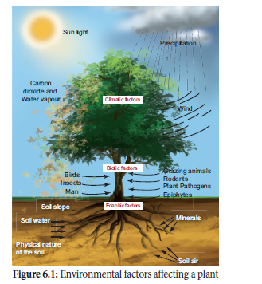
a. Light
Light is a well-known factor needed for the basic physiological processes of plants, such as photosynthesis, transpiration, seed germination and flowering. The portion of the sunlight which can be resolved by the human eye is called visible light. The visible part of light is made up of wavelengths from about 400 Nono meter (violet) to 700 Nono meter (red). The rate of photosynthesis is maximum at blue (400 – 500 nm) and red (600 – 700 Nono meter). The green (500 – 600 nano meter) wavelength of spectrum is less strongly absorbed by plants.
Effects of light on plants
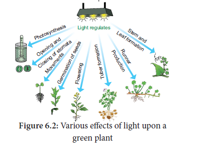
Based on the tolerance to intensities of light, the plants are divided into two types. They are
1. Heliophytes - Light loving plants.
Example: Angiosperms.
2. Sciophytes - Shade loving plants.
Example: Bryophytes and Pteridophytes.
Box item:
In deep sea (less than 500 meter), the environment is dark and its inhabitants are not aware of the existence of celestial source of energy called Sun. What, then is their source of energy?
Box item: do you know?
Palaeoclimatology–Helps to reconstruct past climates of our planet and flora, fauna and ecosystem in which they lived. Example: Air bubbles trapped in ice for tens of thousands of years with fossilized pollen, coral, plant and animal debris.
b. Temperature
Temperature is one of the important factors which affect almost all the metabolic activities of an organism. Every physiological process in an organism requires an optimum temperature at which it shows the maximum metabolic rate. Three limits of temperature can be recognized for any organism. They are
1. Minimum temperature – Physiological activities are lowest.
2. Optimum temperature – Physiological activities are maximum.
3. Maximum temperature – Physiological activities will stop.
Based on the temperature prevailing in an area, Raunkiaer classified the world’s vegetation into the following four types. They are megatherms, mesotherms, microtherms and hekistotherms. In thermal springs and deep-sea hydrothermal vents, the average temperature exceeds 100 degree celsius.
Based on the range of thermal tolerance, organisms are divided into two types.
1. Eurythermal: Organisms which can tolerate a wide range of temperature fluctuations.
Example: Zostera (A marine Angiosperm) and Artemisia tridentata.
2. Stenothermal: Organisms which can tolerate only small range of temperature variations. Example: Mango and Palm (Terrestrial Angiosperms). Mango does not grow in temperate countries like Canada and Germany.
Thermal Stratification
It is usually found in aquatic habitat. The change in the temperature profile with increasing depth in a water body is called thermal stratification. There are three levels of thermal stratifications.
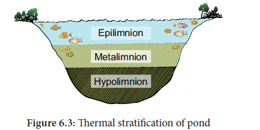
1. Epilimnion – The upper layer of warmer water.
2. Metalimnion – The middle layer with a zone of gradual decrease in temperature.
3. Hypolimnion - The bottom layer of colder water.
Temperature based zonation
Variations in latitude and altitude do affect the temperature and the vegetation on the earth surface. The latitudinal and altitudinal zonation of vegetation is illustrated below:
Box item:
Latitude: Latitude is an angle which ranges from 0 degree at the equator to 90 degree at the poles.
Altitude: How high a place is located above the sea level is called the altitude of the place.
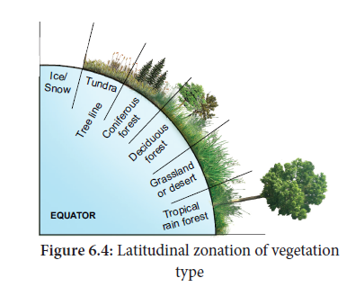
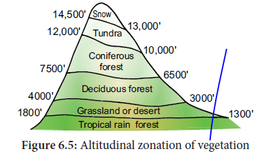
Effects of temperature
The following physiological processes are influenced by temperature:
• Temperature affects the enzymatic action of all the bio-chemical reactions in a plant body.
• It influences Carban di oxide (CO2) and oxcigen (O2) solubility in the biological systems. Increases respiration and stimulates growth of seedlings.
• Low temperature with high humidity can cause spread of diseases in plants.
• The varying temperature with moisture determines the distribution of the vegetation types.
c. Water
Water is one of the most important climatic factors. It affects the vital processes of all living organisms. It is believed that even life had originated only in water during the evolution of
Earth. Water covers more than 70% of the earth’s surface. In nature, water is available to plants in three ways. They are atmospheric moisture, precipitation and soil water.
Box item: do you know?
Evergreen forests – Found where heavy rainfall occurs throughout the year.
Sclerophyllous forests – Found where heavy rainfall occurs during winter and low rainfall during summer.
The productivity and distribution of plants depend upon the availability of water. Further the quality of water is also important especially for the aquatic organisms. The total amount of water salinity in different water bodies are: one).5% in inland water (Fresh water) ii).30 – 35% in sea water and iii) More than 100% in hypersaline water (Lagoons) Based on the range of tolerance of salinity, organisms are divided into two types.
1. Euryhaline: Organisms which can live in water with wide range of salinity. Examples:
Marine algae and marina angiosperms
2. Stenohaline: Organisms which can withstand only small range of salinity. Example: Plants of estuaries.
Terminology |
Terminology |
Environmental factor |
Stenothermal
|
Eurythermal
|
Temperature
|
Stenohaline |
Euryhaline |
Salinity |
Stenoecious |
Euryoecious |
Habitat selection (niche) |
Stenohydric |
Euryhydric |
Water |
Stenophagic |
Euryphagic |
Food |
Stenobathic |
Eurybathic |
Depth of water / habitat |
Table 6.2: Tolerance of Environmental factor
Examples of tolerance to toxicity
one. Soyabean and tomato manage to toleratepresence of cadmium poisoning by isolating cadmium and storing into few groups of cells and prevent cadmium affecting other cells.
ii. Rice and Eichhornia (water hyacinth) tolerate cadmium by binding it to their proteins.
These plants otherwise can also be used to remove cadmium from contaminated soil, this is known as Phytoremediation.
d. Wind
Air in motion is called wind. It is also a vital ecological factor. The atmospheric air contains a number of gases, particles and other constituents. The composition of gases in atmosphere is as follows: Nitrogen mines 78%, Oxygen mines 21%, Carbon-di-oxide mines 0.03%, Argon and other gases mines 0.93%. The other components of wind are water vapour, gaseous pollutants, dust, smoke particles, microorganisms, pollen grains, spores, etc. Anemometer is the instrument used to measure the speed of wind.
Box item: Do you know?
Green House Effect
Albedo Effect
Gases let out to atmosphere causes climatic change. Emission of dust and aerosols (small solids or liquid particles in suspension in the atmosphere) from industries, automobiles, forest fire, So2 and DMS (dimethyl sulphur) play an important role in disturbing the temperature level of any region. Aerosols with small particles is reflecting the solar radiation entering the atmosphere. This is known as Albedo effect. So, it reduces the temperature (cooling) limits, photosynthesis and respiration. The sulphur compounds are responsible for acid rain due to acidification of rain water and destroy the ozone.
Effects of wind
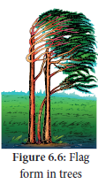
e. Fire
Fire is an exothermic factor caused due to the chemical process of combustion, releasing heat and light. It is mostly man-made and sometimes develops naturally due to the friction between the tree surfaces. Fire is generally divided into
1. Ground fire – Which is flameless and subterranean.
2. Surface fire – Which consumes the herbs and shrubs.
3. Crown fire – Which burns the forest canopy.
Effects of fire
Example: Pyronema confluens.
Box item:
Indicators of fire – Pteris (fern) and Pyronema (fungus) indicates the burnt up and fire disturbed areas. So, they are called indicators of fire.
Fire break – It is a gap made in the vegetation that acts as a barrier to slow down or stop the progress of fire. A natural fire break may occur when there is a lack of vegetation such as River, lake and canyon found in between vegetation may act as a natural fire break.
Rhytidome: It is the structural defense by plants against fire. The outer bark of trees which extends to the last formed periderm is called Rhytidome. It is composed of multiple layers of suberized periderm, cortical and phloem tissues. It protects the stem against fire, water loss, invasion of insects and prevents infections by microorganisms.
Edaphic factors, the abiotic factors related to soil, include the physical and chemical composition of the soil formed in a particular area. The study of soils is called Pedology.
The soil
Soil is the weathered superficial layer of the Earth in which plants can grow. It is a complex composite mass consisting of soil constituents, soil water, soil air and soil organisms, etc.
Soil formation
Soil originates from rocks and develops gradually at different rates, depending upon the
ecological and climatic conditions. Soil formation is initiated by the weathering process. Biological weathering takes place when organisms like bacteria, fungi, lichens and plants help in the breakdown of rocks through the production of acids and certain chemical substances.
Soil types
Based on soil formation (pedogenesis), the soils are divided into
1. Residual soils –These are soils formed by weathering and pedogenesis of the rock.
2. Transported soils – These are transported by various agencies.
The important edaphic factors which affect vegetation are as follows:
1. Soil moisture: Plants absorbs rain water and moisture directly from the air
2. Soil water: Soil water is more important than any other ecological factors affecting the distribution of plants. Rain is the main source of soil water. Capillary water held between pore spaces of soil particles and angles between them is the most important form of water available to the plants.
3. Soil reactions: Soil may be acidic or alkaline or neutral in their reaction. pH value of the soil solution determines the availability of plant nutrients. The best pH range of the soil for cultivation of crop plants is 5.5 to 6.8.
4. Soil nutrients: Soil fertility and productivity is the ability of soil to provide all essential plant nutrients such as minerals and organic nutrients in the form of ions.
5. Soil temperature: Soil temperature of an area plays an important role in determining the geographical distribution of plants. Low temperature reduces use of water and solute absorption by roots.
6. Soil atmosphere: The spaces left between soil particles are called pore spaces which contains oxygen and carbon-di-oxide.
7. Soil organisms: Many organisms existing in the soil like bacteria, fungi, algae, protozoans, nematodes, insects, earthworms, etc. are called soil organisms.
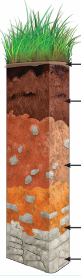 |
Horizon |
Description |
O–Horizon (Organic horizon) Humus |
It consists of fresh or partially decomposed organic matter. O1 – Freshly fallen leaves, twigs, flowers and fruits O2 – Dead plants, animals and their excreta decomposed by micro-organisms. Usually absent in agricultural and deserts. |
|
A–Horizon (Leached horizon) Topsoil - Often rich in humus and minerals. |
It consists of top soil minerals with humus, living creatures and in-organic minerals. A1 – Dark and rich in organic matter because of mixture of organic and mineral matters. A2 – Light coloured layer with large sized mineral particles. |
|
B-Horizon (Accumulation horizon) (Subsoil-Poor in humus, rich in minerals) |
It consists of iron, aluminium and silica rich clay organic compounds.
|
|
C - Horizon (Partially weathered horizon) Weathered rock Fragments - Little or no plant or animal life. [Paraental Material] |
It consists of parent materials of soil, composed of little amount of organic matters without life forms. |
|
R – Horizon [Parent material] Bed rock. |
It is a parent bed rock upon which underground water is found. unweathering parent rock. |
Figure 6.7: Soil Profile
Soil Profile
Soil is commonly stratified into horizons at different depth. These layers differ in their physical, chemical and biological properties. This succession of super-imposed horizons is called soil profile.
Types of soil particles
Based on the relative proportion of soil particles, four types of soil are recognized.
|
Soil type |
size |
Relative proportion |
1 |
Clayey soil |
Less than 0.002mm |
50% clay and 50% silt (cold / heavy soil) |
2 |
Silt soil |
0.002 to 0.02mm |
90% silt and 10% sand |
3 |
Loamy soil |
0.002 to 2mm |
70% sand and 30% clay / silt or both (Garden soil) |
4 |
Sandy soil |
0.2 to 2mm |
85% sand and 15% clay (light soil) |
Table 6.3: Types of soil particles
Box item:
Loamy soil is ideal soil for cultivation. It consists of 70% sand and 30% clay or silt or both. It ensures good retention and proper drainage of water. The porosity of soil provides adequate aeration and allows the penetration of roots.
Based on the water retention, aeration and mineral contents of soil, the distribution of vegetation is divided into following types.
1. Halophytes: Plants living in saline soils
2. Psammophytes: Plants living in sandy soils
3. Lithophytes: Plants living on rocky surface
4. Chasmophytes: Plants living in rocky crevices
5. Cryptophytes: Plants living below the soil surface
6. Cryophytes: Plants living on surface of ice
7. Oxylophytes: Plants living in acidic soil
8. Calciphytes: Plants living in calcium rich alkaline soil.
Box item:
Holard –Total soil water content
Chresard –Water available to plants
Echard – Water not available to plants
The surface features of earth are called topography. Topographic influence on the climate of any area is determined by the interaction of solar radiation, temperature, humidity, rainfall, latitude and altitude. It affects the vegetation through climatic variations in small areas (micro climate) and even changes the soil conditions. Topographic factors include latitude, altitude, direction of mountain, steepness of mountain etc.
a. Latitudes and altitudes
Latitudes represent distance from the equator. Temperature values are maximum at the equator and decrease gradually towards poles. Different types of vegetation occur from equator to poles which are illustrated below.
Height above the sea level forms the altitude. At high altitudes, the velocity of wind remains high, temperature and air pressure decrease while humidity and intensity of light increases. Due to these factors, vegetation at different altitudes varies, showing distinct zonation.
b. Direction of Mountain
North and south faces of mountain or hill possess different types of flora and fauna because they differ in their humidity, rainfall, light intensity, light duration and temperature regions.
Box item:
Ecotone - The transition zone between two ecosystems. Example: The border between forest and grassland.
Edge effect – Species found in ecotone areas are unique due to the effect of the two habitats. Example: Owl in the ecotone area between forest and grassland.
The two faces of the mountain or hill receive different amount of solar radiation, wind action and rain. Of these two faces, the windward region possesses good vegetation due to heavy rains and the leeward region possesses poor vegetation due to rain shadows (rain deficit).
Similarly in the soil of aquatic bodies like ponds the center and edge possess different depth of water due to soil slope and different wave actions in the water body. Therefore, different parts of the same area may possess different species of organisms.
c. Steepness of the mountain
The steepness of the mountain or hill allows the rain to run off. As a result the loss of water causes water deficit and quick erosion of the top soil resulting in poor vegetation. On the other hand, the plains and valley are rich in vegetation due to the slow drain of surface water and better retention of water in the soil.
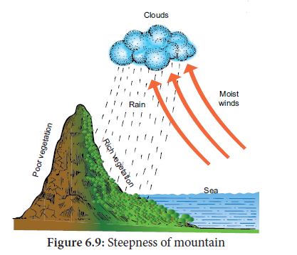
The interactions among living organisms such as plants and animals are called biotic factors, which may cause marked effects upon vegetation. The effects may be direct and indirect and modifies the environment. The plants mostly which lives together in a community and influence one another. Similarly, animals in association with plants also affect the plant life in one or several ways. The different interactions among them can be classified into following two types they are positive interaction and negative interaction
Positive interactions
When one or both the participating species are benefited, it is positive interaction. Examples;
Mutualism and Commensalism.
a. Mutualism: It is an interaction between two species of organisms in which both are
benefitted from the obligate association. The following are common examples of mutualism.
Nitrogen fixation
Rhizobium (Bacterium) forms nodules in the roots of leguminous plants and lives symbiotically.
The Rhizobium obtains food from leguminous plant and in turn fixes atmospheric nitrogen into nitrate, making it available to host plants.
Other examples:
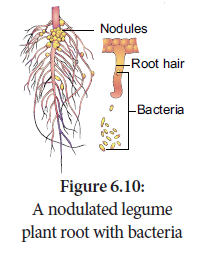
b. Commensalism: It is an interaction between two organisms in which one is benefitted and the other is neither benefitted nor harmed. The species that derives benefit is called the commensal, while the other species is called the host. The common examples of commensalism
are listed below:
Interaction type |
Combination |
Effects |
Examples |
1 Positive interaction |
|
|
|
1 Mutualism |
(+) (+) |
Both species benefitted |
Lichen, Mycorrhiza etc. |
2 Commensalism |
(+) (0) |
One species is benefitted and the other species is neither benefitted nor harmed |
orchids, Lianas etc. |
2 Negative interaction |
|
|
|
4.Predation |
(+) (mines) |
One species benefitted, the other species are harmed |
Drosera, Nepenthes etc. |
5.Parasitism |
(+) (mines) |
One species benefitted; the other species are harmed |
Cuscuta, Duranta, Viscum etc. |
6.Competition |
(mines) (mines) |
Harmful for both |
Grassland species |
7.Amensalism |
(mines) (0) |
Harmful for one, but the other species are unaffected |
Penicillium and Staphylococcus |
(+) Benefitted, (mines) Harmed (0) Un-affected
Table 6.4: Different interactions of plant
Epiphytes
The plants which are found growing on other plants without harming them are called epiphytes. They are commonly found in tropical rain forest.
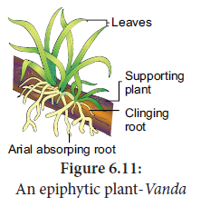
The epiphytic higher plant (Orchid) gets its nutrients and water from the atmosphere with the help of the hygroscopic roots which contain special type of spongy tissue called Velamen. It prepares its own food and does not depend on the host. Using the host plant only they support and does not harm it in any way.
Box item: do you know?
Proto Cooperation
An interaction between organisms of different species in which both organisms benefit but neither is dependent on the relationship. Example: Soil bacteria / fungi and plants growing in the soil.
Negative interactions
When one of the interacting species is benefitted and the other is harmed, it is called negative
interaction. Examples: predation, parasitism, competition and amensalism.
a. Predation: It is an interaction between two species, one of which captures, kills and eats up the other. The species which kills is called a predator and the species which is killed is called a prey. The predator is benefitted while the prey is harmed.
Examples:
• A number of plants like Drosera (Sun dew Plant), Nepenthes (Pitcher Plant), Dionaea (Venus fly trap), Utricularia (Bladder wort) and Sarracenia are predators which consume insects and other small animals for their food as a source of nitrogen. They are also called as insectivorous plants.
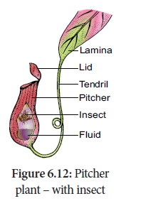
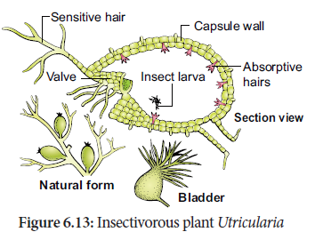
• Many herbivores are predators. Cattles, Camels, Goats etc., frequently browse on the tender shoots of herbs, shrubs and trees. Generally, annuals suffer more than the perennials. Grazing and browsing may cause remarkable changes in vegetation. Nearly 25 percent of all insects are known as phytophagous (feeds on plant sap and other parts of plant)
• Many defense mechanisms are evolved to avoid their predations by plants. Examples: Calotropis produces highly poisonous cardiac glycosides, Tobacco produces nicotine, coffee plants produce caffeine, Cinchona plant produces quinine. Thorns of Bougainvillea, spines of Opuntia, and latex of cacti also protect them from predators.
b. Parasitism:
It is an interaction between two different species in which the smaller partner (parasite) obtains food from the larger partner (host or plant). So the parasitic species is benefited while the host species is harmed. Based on the host-parasite relationship, parasitism is classified into two types they are holoparasite and hemiparasite.
Holoparasites
The organisms which are dependent upon the host plants for their entire nutrition are called
Holoparasites. They are also called total parasites.
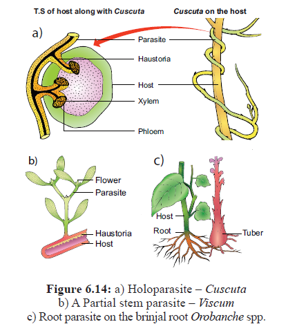
Figure 6.14:
a) Holoparasite – Cuscuta
b) A Partial stem parasite – Viscum
c) Root parasite on the brinjal root Orobanche species
Examples:
• Cuscuta is a total stem parasite of the host plant Acacia, Duranta and many other plants. Cuscuta even gets flower inducing hormone from its host plant.
• Balanophora, Orobanche and Rafflesia are the total root parasites found on higher plants.
Hemiparasites
The organisms which derive only water and minerals from their host plant while synthesizing their own food by photosynthesis are called Hemiparasites. They are also called partial parasites.
Examples:
• Viscum and Loranthus are partial stem parasites.
• Santalum (Sandal Wood) is a partial root parasite.
The parasitic plants produce the haustorial roots inside the host plant to absorb nutrients from the vascular tissues of host plants.
c. Competition:
It is an interaction between two organisms or species in which both the organisms or species are harmed. Competition is the severest in population that has irregular distribution. Competition is classified into intraspecific and interspecific.
1.Intraspecific competition:
It is an interaction between individuals of the same species. This competition is very severe because all the members of species have similar requirements of food, habitat, pollination etc. and they also have similar adaptations to fulfill their needs.
2. Interspecific competition:
It is an interaction between individuals of different species. In grassland, many species of grasses grow well as there is little competition when enough nutrients and water is available. During drought shortage of water occurs. A life and death competition starts among the different species of grass lands. Survival in both these competitions is determined by the quantity of nutrients, availability of water and migration to new areas. Different species of herbivores, larvae and grass hopper competing for fodder or forage plants. Trees, shrubs and herbs in a forest struggle for sunlight, water and nutrients and also for pollination and dispersal of fruits and seeds. The Utricularia (Bladderwort) competes with tiny fishes for small crustaceans and insects.
d. Amensalism:
It is an interspecific interaction in which one species is inhibited while the other species is neither benefitted nor harmed. The inhibition is achieved by the secretion of certain chemicals called allelopathic substances. Amensalism is also called antibiosis.
Inter-specific interactions/ Co-evolutionary dynamics
(one)Mimicry:
It is a phenomenon in which living organism modifies its form, appearance, structure or behaviour and looks like another living organism as a self-defence and increases the chance of its survival. Floral mimicry is for usually inviting pollinators but animal mimicry is often protective. Mimicry is a result of evolutionary significance due to shape and sudden heritable mutation and preservation by
natural selection.
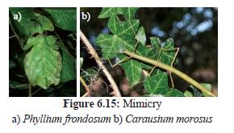
Example:
• The plant, Ophrys an orchid, the flower looks like a female insect to attract the male insect to get pollinated by the male insect and it is otherwise called ‘floral mimicry ‘.
• Carausium morosus – stick insect or walking stick. It is a protective mimicry.
• Phyllium frondosum – leaf insect, another example of protective mimicry.
ii. Myrmecophily:
Sometimes, ants take their shelter on some trees such as Mango, Litchi, Jamun, Acacia etc. These ants act as body guards of the plants against any disturbing agent and the plants in turn provide food and shelter to these ants. This phenomenon is known as Myrmecophily. Example: Acacia and acacia ants.
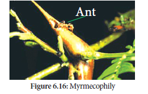
iii. Co-evolution:
The interaction between organisms, when continues for generations, involves reciprocal changes in genetic and morphological characters of both organisms. This type of evolution is called Co-evolution. It is a kind of co- adaptation and mutual change among interactive species.
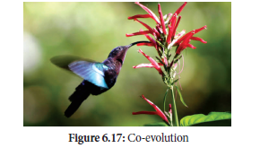
Examples:
The modifications in the structure of organisms to survive successfully in an environment are called adaptations of organisms. Adaptations help the organisms to exist under the prevailing ecological habitat. Based on the habitats and the corresponding adaptations of plants, they are classified as hydrophytes, xerophytes, mesophytes, epiphytes and halophytes.
Hydrophytes
The plants which are living in water or wet places are called hydrophytes. According to their relation to water and air, they are subdivided into following categories:
(1) Free floating hydrophytes:
These plants float freely on the surface of water. They remain in contact with water and air, but not
with soil. Examples: Eichhornia, Pistia and Wolffia (smallest flowering plant).
(2) Rooted floating hydrophytes:
In these plants, the roots are fixed in mud, but their leaves and flowers are floating on the surface of water. These plants are in contact with soil, water and air. Examples: Nelumbo, Nymphaea, Potomogeton and Marsilea.
Box item: Lotus seeds show highest longevity in plant kingdom.
(3) Submerged floating hydrophytes:
These plants are completely submerged in water and not in contact with soil and air. Examples:
Ceratophyllum and Utricularia.
(4) Rooted- submerged hydrophytes:
These plants are completely submerged in water and rooted in soil and not in contact with air.
Examples: Hydrilla, Vallisneria and Isoetes.
(5) Amphibious hydrophytes (Rooted emergent hydrophytes):
These plants are adapted to both aquatic and terrestrial modes of life. They grow in shallow water. Examples: Ranunculus, Typha and Sagittaria.
![1.Free floating hydrophytes – the plants which live in water are given in the picture. It has floating leaves which help the plant to float, stolen filled with air for floating , fibrous roots, water and root pocket which is also filled with air for floating. Thus the plant parts are modified for ecological adaptations.2.Another free floating hydrophyte called by the name Pistia is given. This picture has Lamina, inflated petiole, offset, fibrous roots and root pockets.3.Rooted floating hydrophyte Nymphaea is given in this picture. The roots are fixed in the mud but the leaves and flowers float. This picture contains flower, lamina, petiole, flower bud, water, rhizome, root and mud.4.Another rooted floating hydrophyte Marsilea is given. It has leaf lets, petiole, water, young leaf, rhizome, roots and mud](images/image317.png)
![1.Submerged floating hydrophyte Ceratophyllum. This plant is totally submerged in water but not in contact with soil or air. This plant has 3 parts: water, stem, submerged leaves.2.Another submerged floating hydrophyte is given named Utricularia. We already studied about this under insectivorous conditions.3.Rooted submerged hydrophyte Vallisneria is given. These plants’ root is rooted in the soil but no contact with air. Female plant and male plants are given. It has female flower, water, male flower, stolen, rocks and mud.4.Another rooted submerged hydrophyte is shown named hydrilla. Here hydrilla has flower, whorls of submerged leaves, water, branch, rocks and mud](images/image315.png)
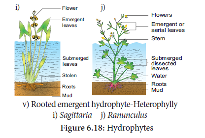
Box item:
Hygrophytes: The plants which can grow in moist damp and shady places are called hygrophytes. Examples: Habenaria (Orchid), Mosses (Bryophytes), etc.
Morphological adaptations of Hydrophytes:
In root
• Roots are totally absent in Wolffia and Salvinia or poorly developed in Hydrilla or well developed in Ranunculus.
• The root caps are replaced by root pockets. Example: Eichhornia
In stem
• The stem is long, slender, spongy and flexible in submerged forms.
• In free floating forms the stem is thick, short stoloniferous and spongy; and in rooted floating forms, it is a rhizome.
• Vegetative propagation is through runners, stolon, stem and root cuttings, tubers, dormant apices and offsets.
In leaves
• The leaves are thin, long and ribbon shaped in Vallisneria or long and linear in Potamogeton or finely dissected in Ceratophyllum
• The floating leaves are large and flat as in Nymphaea and Nelumbo. In Eichhornia and Trapa petioles become swollen and spongy.
• In emergent forms, the leaves show heterophylly (Submerged leaves are dissected and aerial leaves are entire).
Example: Ranunculus, Limnophila heterophylla and Sagittaria
Anatomical adaptations
• Cuticle is either completely absent or if present it is thin and poorly developed
• Single layer of epidermis is present
• Cortex is well developed with aerenchyma
• Vascular tissues are poorly developed. In emergent forms vascular elements are well developed.
• Mechanical tissues are generally absent except in some emergent forms. Pith cells are sclerenchymatous.
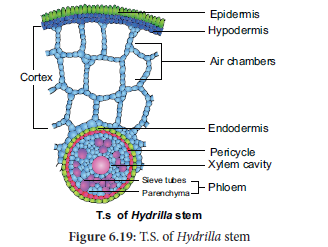
Physiological adaptations of Hydrophytes:
• Hydrophytes have the ability to withstand anaerobic conditions .
• They possess special aerating organs.
Xerophytes
The plants which are living in dry or xeric condition are known as Xerophytes. Xerophytic
habitat can be of two different types. They are:
a.Physical dryness:
In these habitats, soil has a little amount of water due to the inability of the
soil to hold water because of low rainfall.
b. Physiological dryness:
In these habitats, water is sufficiently present but plants are unable to absorb it because of the absence of capillary spaces. Example: Plants in salty and acidic soil. Based on adaptive characters xerophytes are classified into three categories. They are Ephemerals, Succulents and Non succulent plants.
one. Ephemerals:
These are also called drought escapers or drought evaders. These plants complete their life cycle within a short period (single season).
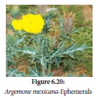
These are not true xerophytes. Examples: Argemone, Mollugo, Tribulus and Tephrosia.
2. Succulents:
These are also called drought enduring plants. These plants store water in their plant parts during the dry period. These plants develop certain adaptive characters to resist extreme drought conditions. Examples: Opuntia, Aloe, Bryophyllum and Begonia.
3. Non succulents:
These are also called drought resistant plants (true xerophytes). They face both external and internal dryness. They have many adaptations to resist dry conditions. Examples: Casuarina, Nerium, Zizyphus and Acacia.
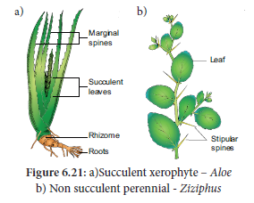
Morphological Adaptations
In root
• Root system is well developed and is greater than that of shoot system.
• Root hairs and root caps are also well developed.
Box item:
In xerophytic plants with the leaves and stem covered with hairs are called trichophyllous
plants. Example: Cucurbits (Melothria and Mukia )
In stem
![1.Four xerophytes are given. First one in the picture is a Succulent Xerophyte – a plant called Phylloclade – opuntia. In Phylloclades stem is modified into fleshy leaf structure. In this picture flower, spines and phylloclade are marked.2.Non Succulent Perennial – capparis is given. Stipular spine and stem are marked.3.Cladode of Asparagus picture is given. In Cladodes, internodes are modified into a fleshy green structure. Scale leaves, stem and spine are marked. 4.Phyllode – Acacia is given in the picture. When petioles are modified into fleshy leaf-like structures. Petiole,Leaves, Phyllode are marked](images/image297.png)
a) A succulent xerophyte: Phylloclade – Opuntia
b) Non succulent: Perennial - Capparis
c) Cladode of Asparagus
d) Phyllode – Acacia
In leaves
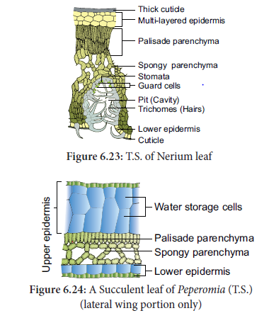
Anatomical adaptations
Physiological adaptations
Mesophytes
The plants which are living in moderate conditions (neither too wet nor too dry) are known as mesophytes. These are common land plants. Example: Maize and Hibiscus.
Morphological adaptations
Anatomical adaptations
Physiological adaptations
Box item:
Tropophytes are plants which behave as xerophytes at summer and behave as mesophytes (or) hydrophytes during rainy season.
Epiphytes
Epiphytes are plants which grow perched on other plants (Supporting plants). They use the supporting plants only as shelter and not for water or food supply. These epiphytes are commonly seen in tropical rain forests.
Examples: Orchids, Lianas, Hanging Mosses and Money plant.
Morphological adaptations
Clinging roots fix the epiphytes firmly on the surface of the supporting objects.
Aerial roots are green coloured roots which may hang downwardly and absorb moisture from the atmosphere with the help of a spongy tissue called velamen.
Anatomical adaptations
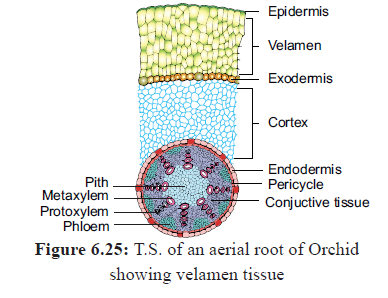
Physiological adaptations
Special absorption processes of water by velamen tissue.
Halophytes
There are special type of Halophytic plants which grow on soils with high concentration of salts. Examples: Rhizophora, Sonneratia and Avicennia.
Halophytes are usually found near the seashores and Estuaries. The soils are physically wet but physiologically dry. As plants cannot use salt water directly, they require filtration of salt using physiological processes. This vegetation is also known as mangrove forest and the plants are called mangroves.
Morphological adaptations
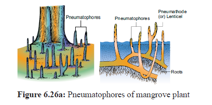
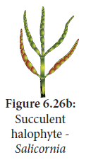
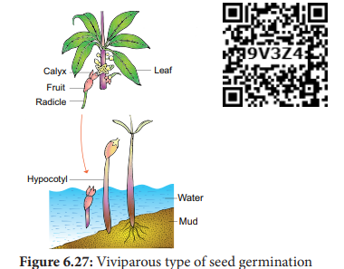
Anatomical adaptations
Physiological adaptations
Box item:
Do you know?
Out of three districts of Tamil Nadu (Nagapattinam, Thanjavur and Thiruvarur), Muthupet (Thiruvarur district) was less damaged by Gaja cyclone (November 2018) due to the presence of mangrove forest.
Both fruits and seeds possess attractive colour, odour, shape and taste needed for the dispersal by birds, mammals, reptiles, fish, ants and insects, even earthworms. The seed consists of an mbryo, stored food material and a protective covering called seed coat. As seeds contain miniature but dormant future plants, their dispersal is an important criterion for distribution and establishment of plants over a wide geographical area. The dissemination of seeds and fruits to various distances from the parent plant is called seed and fruit dispersal. It takes place with the help of ecological factors such as wind, water and animals.
Seed dispersal is a regeneration process of plant populations and a common means of colonizing new areas to avoid seedling level competition and from natural enemies like herbivores, frugivores and pathogens.
Fruit maturation and seed dispersal is influenced by many ecologically favourable conditions such as Season (Example: Summer), suitable environment, and seasonal availability of dispersal agents like birds, insects etc.
Seeds require agents for dispersal which are crucial in plant community dynamics in many ecosystems around the globe. They offer many benefits to communities such as food and nutrients, migration of seeds across habitats and helps spreading plant genetic diversity.
The individual seeds or the whole fruit may be modified to help for the dispersal by wind. Wind dispersal of fruits and seeds is quite common in tall trees. The adaptation of the wind dispersed
plants are form a wing. Examples: Maple, Gyrocarpus, Dipterocarpus and Terminalia
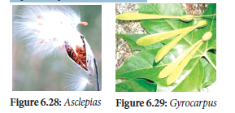
• Feathery Appendages:
Seeds or fruits may have feathery appendages which greatly increase their buoyancy to disperse to high altitudes. Examples: Vernonia and Asclepias.
• Censor mechanisms:
The fruits of many plants open in such a way that the seeds can escape only when the fruit is violently shaken by a strong wind. Examples: Aristolochia and Poppy.
Box item:
Guess!! Who am I…….? I am dispersed by ant and I have caruncle.
Dispersal of seeds and fruits by water usually occurs in those plants which grow in or near water bodies. Adaptation of hydrochory is
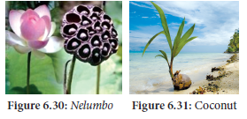
Birds and mammals, including human beings play an efficient and important role in the dispersal of fruit and seeds. They have the following devices.
(1)Hooked fruit:
The surface of the fruit or seeds have hooks, (Xanthium), barbs (Andropogon), spines (Aristida) by means of which they adhere to the body of animals or clothes of human beings and get dispersed.
(2) Sticky fruits and seeds:
a. Some fruits have sticky glandular hairs by which they adhere to the fur of grazing animals.
Example: Boerhaavia and Cleome.
b. Some fruits have viscid layer which adhere to the beak of the bird which eat them and when
they rub them on to the branch of the tree, they disperse and germinate. Example: Cordia and
Alangium
(3) Fleshy fruits:
Some fleshy fruits with conspicuous colours are dispersed by human beings to distant places after consumption. Example: Mango and Diplocyclos
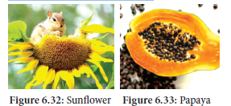
Some fruits burst suddenly with a force enabling to throw seeds to a little distance away from the plant. Autochory shows the following adaptations.
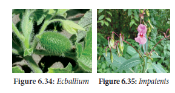
Human aided seed dispersal
Seed Ball:
Seed ball is an ancient Japanese technique of encasing seeds in a mixture of clay and soil humus (also in cow dung) and scattering them on to suitable ground, not planting of trees manually. This method is suitable for barren and degraded lands for tree regeneration and vegetation before
monsoon period where the suitable dispersal agents become rare.
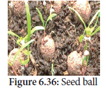
Box item:
Guess? what is atelochory or Achory?
Ecologically important days |
March 21-World Forest Day April 22 - Earth Day May 22 - World bio diversity day June 05 - World environment day July 07 - Van Mohostav Day September 16 - International Ozone Day |
Advantages of seed dispersal:
Ecology is a division of biology and dealswith the study of environment in relation to
organisms. Ecology is mainly divided into two branches Autecology and Synecology. The
environment (surrounding) includes physical, chemical and biological components. These
factors can be classified into living (biotic) and non-living (abiotic), which make the environment of an organism. The ecological factors are meaningfully grouped into four classes, which are as follows:
Climate is one of the important natural factors controlling the plant life. The climatic factors include light, temperature, water, wind, fire, excetra. Edaphic factors, the abiotic factors related to soil, include the physical and chemical composition of the soil formed in a particular area. The surface features of earth are called topography. Topographic influence on the climate of any area is determined by the interaction of solar radiation, temperature, humidity, rainfall, latitude and altitude. The interactions among living organisms, the plants and animals are called biotic factors, which may cause marked effects upon vegetation.
The modifications in the structure of organisms to survive successfully in an environment are called adaptations of organisms. Based on the habitats and the corresponding adaptations of plants, they are classified into
The dissemination of seeds and fruits to various distances from the parent plant is called seed and fruit dispersal. It takes place with the help of ecological factors such as wind, water and animals.
1. Arrange the correct sequence of ecological hierarchy starting from lower to higher level.
a) Individual organism →Population Landscape→ Ecosystem
b) Landscape → Ecosystem → Biome →Biosphere
c) community → Ecosystem → Landscape → Biome
d) Population → organism → Biome → Landscape
2. Ecology is the study of an individual species is called
one) Community ecology
ii) Autecology
iii) Species ecology
iv) Synecology
a) one only
b) ii only
c) one and iv only
d) ii and iii only
3. A specific place in an ecosystem, where an organism lives and performs its functions is
a) habitat
b) niche
c) landscape
d) biome
4. Read the given statements and select the correct option.
one) Hydrophytes possess aerenchyma to support themselves in water.
ii) Seeds of Viscum are positively photoblastic as they germinate only in presence of light.
iii) Hygroscopic water is the only soil water available to roots of plant growing in soil as it is present inside the micropores.
iv) High temperature reduces use of water and solute absorption by roots.
a) one, ii, and iii only
b) ii, iii and iv
c) ii and iii only
d) one and ii only
5. Which of the given plant produces cardiac glycosides?
a) Calotropis
b) Acacia
c) Nepenthes
d) Utricularia
6. Read the given statements and select the correct option.
one) Loamy soil is best suited for plant growth as it contains a mixture of silt, sand and clay.
ii) The process of humification is slow in case of organic remains containing a large amount of lignin and cellulose.
iii) Capillary water is the only water available to plant roots as it is present inside the micropores.
iv) Leaves of shade plant have more total chlorophyll per reaction centre, low ratio of chl a and chl b are usually thinner leaves.
a) one, ii and iii only
b) ii, iii and iv only
c) one, ii and iv only
d) ii and iii only
7. Read the given statements and select the correct option.
Statement A: Cattle do not graze on weeds of Calotropis.
Statement B: Calotropis have thorns and spines, as defense against herbivores.
a) Both statements A and B are incorrect.
b) Statement A is correct but statement B is incorrect.
c) Both statements A and B are correct but statement B is not the correct explanation of statement A.
d) Both statements A and B are correct and statement B is the correct explanation of
statement A.
8. In soil water available for plants is
a) gravitational water
b) chemically bound water
c) capillary water
d) hygroscopic water
9. Read the following statements and fill up the blanks with correct option.
one) Total soil water content in soil is called dash
ii) Soil water not available to plants is called dash
iii) Soil water available to plants is called dash
|
(one) |
(ii) |
(iii) |
(a) |
Holard |
Echard |
Chresard |
(b) |
Echard |
Holard |
Chresard |
(c) |
Chresard |
Echard |
Holard |
(d) |
Holard |
Chresard |
Echard |
10. Column one represent the size of the soil particles and Column II represents type of soil components. Which of the following is correct match for the Column I and Column II
Column - one Column - II
one). 0.2 to 2.00 mm one) Slit soil
II) Less than 0.002 mm ii) Clayey soil
III) 0.002 to 0.02 mm iii) Sandy soil
IV) 0.002 to 0.2 mm iv) Loamy soil
|
one |
II |
III |
IV |
a |
ii |
iii |
iv |
one |
b |
iv |
one |
iii |
ii |
c |
iii |
ii |
one |
iv |
d |
none of the above |
|
|
|
11. The plant of this group are adapted to live partly in water and partly above substratum and free from water
a) Xerophytes
b) Mesophytes
c) Hydrophytes
d) Halophytes
12 . Identify the A, B, C and D in the given table
Interaction |
Effects on species X |
Effects on species Y |
Mutualism |
A |
(+) |
B |
(+) |
(mines) |
Competition |
(mines) |
C |
D |
(mines) |
(0) |
|
A |
B |
C |
D |
(a) |
(+) |
Parasitism |
(mines) |
Amensalism |
(b) |
(mines) |
Mutalism |
(+) |
Competition |
(c) |
(+) |
Competition |
(0) |
Mutalism |
(d) |
(0) |
Amensalism |
(+) |
Parasitism |
13. Ophrys an orchid resembling the female of an insect so as to able to get pollinated is
due to phenomenon of
a) Myrmecophily
b) Ecological equivalents
c) Mimicry
d) None of these
14. A free living nitrogen fixing cyanobacterium which can also form symbiotic association with the water fern Azolla
a) Nostoc
b) Anabaena
c) chlorella
d) Rhizobium
15. Pedogenesis refers to
a) Fossils
b) Water
c) Population
d) Soil
16. Mycorrhiza promotes plant growth by
a) Serving as a plant growth regulator
b) Absorbing inorganic ions from soil
c) Helping the plant in utilizing atmospheric nitrogen
d) Protecting the plant from infection
17. In a freshwater environment like pond,rooted autotrophs are
a) Nymphaea and typha
b) Ceratophyllum and Utricularia
c) Wolffia and pistia
d) Azolla and lemna
18. Match the following and choose the correct combination from the options given below:
Column one (Interaction) |
Column two (Examples) |
one) Mutualism |
one) Trichoderma and Penicilliu |
two) Commensalism |
two) Balanophora, Orobanche |
three) Parasitism |
three) Orchids and Ferns |
four) Predation |
four) Lichen and Mycorrhiza |
five) Amensalism |
five) Nepenthes and Diaonaea |
|
one |
II |
III |
IV |
5 |
a) |
one |
ii |
iii |
iv |
5 |
b) |
ii |
iii |
iv |
5 |
one |
c) |
iii |
iv |
5 |
1 |
ii |
d) |
iv |
iii |
ii |
v |
one |
19. Sticky glands of Boerhaavia and Cleome support
a) Anemochory
b) Zoochory
c) Autochory
d) Hydrochory
20. Define ecology.
21. What is ecological hierarchy? Name the levels of ecological hierarchy.
22. What are ecological equivalents? Give one example.
23. Distinguish habitat and niche
24. Why are some organisms called as eurythermals and some others as stenohaline?
25. ‘Green algae are not likely to be found in the deepest strata of the ocean’. Give at least one reason.
26. What is Phytoremediation?
27. What is Albedo effect and write their effects?
28. The organic horizon is generally absent from agricultural soils because tilling, example, plowing, buries organic matter. Why is an organic horizon generally absent in desert soils?
29. Soil formation can be initiated by biological organisms. Explain how?
30. Sandy soil is not suitable for cultivation. Explain why?
31. Describe the mutual relationship between the fig and wasp and comment on the phenomenon that operates in this relationship.
32. Lichen is considered as a good example of obligate mutualism. Explain.
33. What is mutualism? Mention any two examples where the organisms involved are commercially exploited in modern agriculture.
34. List any two adaptive features evolved in parasites enabling them to live successfully on their host?
35. Mention any two significant roles of predation plays in nature.
36. How does an orchid ophrys ensures its pollination by bees?
37. Water is very essential for life. Write any three features for plants which enable them to survive in water scarce environment.
38. Why do submerged plants receive weak illumination than exposed floating plants in a lake?
39. What is vivipary? Name a plant group which exhibits vivipary.
40. What is thermal stratification? Mention their types.
41. How is rhytidome act as the structural defence by plants against fire?
42. What is myrmecophily?
43. What is seed ball?
44. How is anemochory differ from zoochory?
45. What is co evolution?
46. Explain Raunkiaer classification in the world’s vegetation based on the temperature.
47. List out the effects of fire to plants.
48. What is soil profile? Explain the characters of different soil horizons.
49 Give an account of various types of parasitism with examples.
50. Explain different types of hydrophytes with examples.
51. Enumerate the anatomical adaptations of xerophytes.
52. List out any five morphological adaptations of halophytes.
53. What are the advantages of seed dispersal?
54. Describe dispersal of fruit and seeds by animals.
Antibiosis: An association of two organisms which is harmful to one of them.
Biome: A major regional community of plants and animals with similar life forms and environmental conditions.
Biosphere: The envelope containing all living organisms on earth.
Community: A group of organism living in the same place.
Flora: The kinds of plants in region
Frugivores: Fruit eating organisms
Hekistotherms: (Temperature less than 7 degree celsius) Where very low temperature prevails and the dominant vegetation is alpine vegetation.
Landscape: The visible features of an area of land.
Lianes: Twining vines with woody stems, common in forest of warm climate.
Megatherms: (Temperature more than 24 degree celsius) Where high temperature prevails throughout
the year and the dominant vegetation is tropical rain forest.
Mesotherms: (Temperature ranges between 17 degree celsius and 24 degree celsius) Where high temperature alternates with low temperature and the dominant vegetation is tropical deciduous forest.
Microtherms: (Temperature ranges between 7 degree celsius and 17 degree celsius) Where low temperature prevails and the dominant vegetation is mixed coniferous forest.
Population: A group of individuals of a single species.
Scotoactive type of stomata: Stomata opens during night in succulent plants and closes during the day.
Vivipary: When seeds or embryos begin to develop before they detach from the parent.
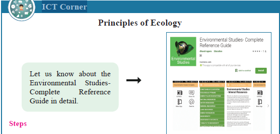
Steps
• Type the URL or scan the QR code to open the activity page then Introduction
page will open.
• Click on the Content icon in the introduction page.
• Click on the topic you like.
• To know more applications related to this title click on More apps.ICT
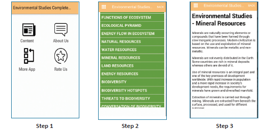
URL:
https://play.google.com/store/apps/details?id=com.dhavaldev.
EnvironmentalStudies
* Pictures are indicative only
The learner will be able to,